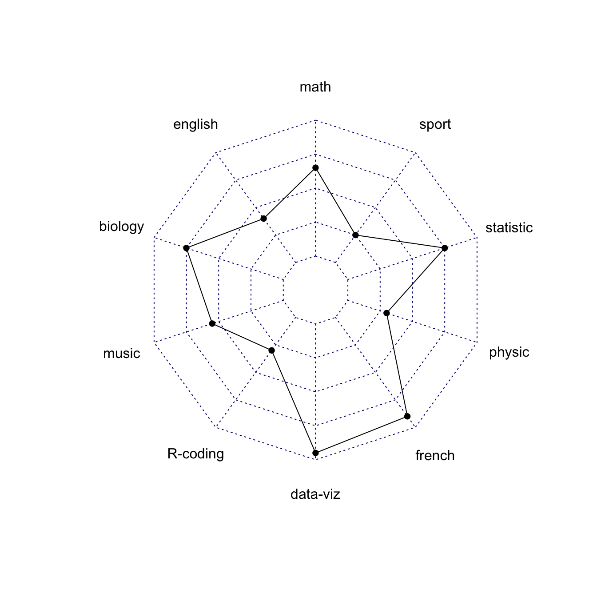
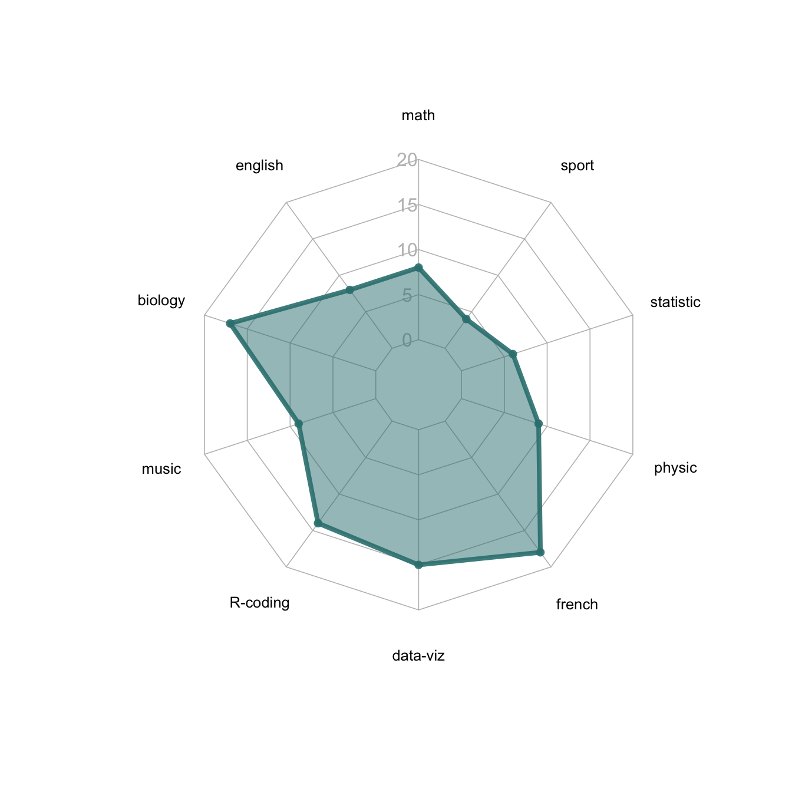

Related chart types

Barplot

Spider / Radar

Wordcloud

Parallel

Lollipop

Circular Barplot
How to build the most basic radar chart with R and the fmsb library: check several reproducible examples with explanation and R code.
fmsb packageRadar charts are also called Spider or Web or Polar charts. They are drawn in R using the fmsb library.
Input data format is very specific. Each row must be an entity. Each column is a quantitative variable. First 2 rows provide the min and the max that will be used for each variable.
Once you have this format, the radarchart() function makes all the job for you.

# Library
library(fmsb)
# Create data: note in High school for Jonathan:
data <- as.data.frame(matrix( sample( 2:20 , 10 , replace=T) , ncol=10))
colnames(data) <- c("math" , "english" , "biology" , "music" , "R-coding", "data-viz" , "french" , "physic", "statistic", "sport" )
# To use the fmsb package, I have to add 2 lines to the dataframe: the max and min of each topic to show on the plot!
data <- rbind(rep(20,10) , rep(0,10) , data)
# Check your data, it has to look like this!
# head(data)
# The default radar chart
radarchart(data)The radarchart() function offers several options to customize the chart:
pcol → line colorpfcol → fill colorplwd → line width cglcol → color of the netcglty → net line type (see possibilities)axislabcol → color of axis labelscaxislabels → vector of axis labels to displaycglwd → net width vlcex → group labels size
# Library
library(fmsb)
# Create data: note in High school for Jonathan:
data <- as.data.frame(matrix( sample( 2:20 , 10 , replace=T) , ncol=10))
colnames(data) <- c("math" , "english" , "biology" , "music" , "R-coding", "data-viz" , "french" , "physic", "statistic", "sport" )
# To use the fmsb package, I have to add 2 lines to the dataframe: the max and min of each topic to show on the plot!
data <- rbind(rep(20,10) , rep(0,10) , data)
# Check your data, it has to look like this!
# head(data)
# Custom the radarChart !
radarchart( data , axistype=1 ,
#custom polygon
pcol=rgb(0.2,0.5,0.5,0.9) , pfcol=rgb(0.2,0.5,0.5,0.5) , plwd=4 ,
#custom the grid
cglcol="grey", cglty=1, axislabcol="grey", caxislabels=seq(0,20,5), cglwd=0.8,
#custom labels
vlcex=0.8
)This page showed the basics of polar chart with R and the fmsb package. Next example describes a few more customization and show how to proceed to visualize several groups on the same chart.
Related chart types